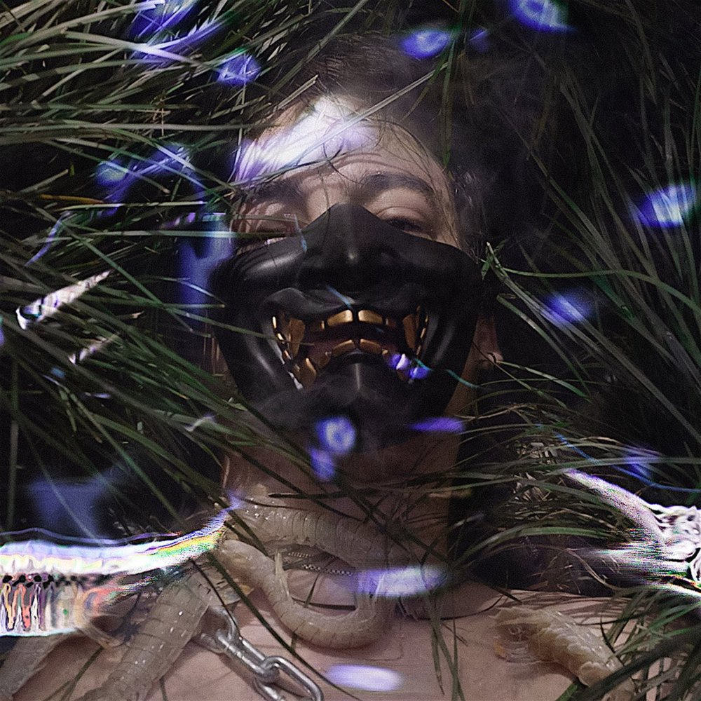
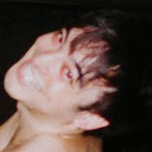
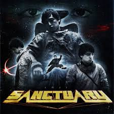
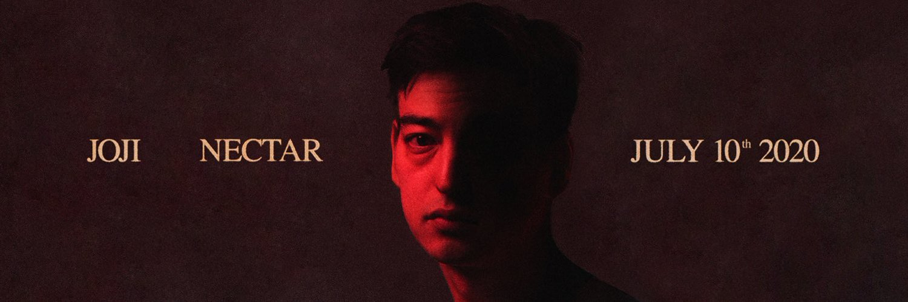

George Kusunoki Miller (born 18 September 1992), better known by his stage name Joji and formerly
by his online aliases Filthy Frank and Pink Guy, is a Japanese singer, songwriter, rapper,
record producer, author, and former Internet personality and comedian.
Miller's start as an entertainer began on his now defunct YouTube channels, DizastaMusic,
TooDamnFilthy, and TVFilthyFrank, that consisted of rap songs, rants, extreme challenges,
ukulele performances and a shock humor show titled The Filthy Frank Show, with most of the
main characters played by Miller, including the titular character of Filthy Frank/ Papa Franku
. To complement his TVFilthyFrank channel, Miller produced comedy hip hop music under his Pink Guy
alias, who is also a zentai-wearing recurring character on The Filthy Frank Show, with his songs
featured on the show and his discography spanning two full-length projects and an extended play.
Miller's videos had widespread impact, including starting a viral dance craze known as the
Harlem Shake, which was directly responsible for the debut of Baauer's "Harlem Shake" song atop
the Billboard Hot 100. Many YouTube personalities have made major or cameo appearances on The
Filthy Frank Show, including h3h3Productions, iDubbbz, JonTron, Michael Stevens, and PewDiePie.
In December 2017, Miller stated he had retired the channel to focus on his music career, under the name Joji, producing more nuanced and serious music, releasing the EP In Tongues, which peaked at number 58 on the Billboard 200, and his debut studio album Ballads 1, which reached number 1 on Billboard's top R&B and hip-hop chart in November 2018. With this, Miller became the first Asian-born artist to do so. Miller's music has been described as a mix between R&B, lo-fi and trip hop.
The Filthy Frank Show
Miller created the Filthy Frank character during his time on his DizastaMusic YouTube channel, on
which he created sketch comedy-based content. The channel started gaining popularity once he
conceptualised Filthy Frank, a character who is described as the anti-vlogger of YouTube, in
September 2015. The first known video on this particular channel (before his creation of the Frank
character) was uploaded on 19 June 2008, and was titled "Lil Jon falls off a table". The
DizastaMusic channel has over 915,000 subscribers and is nearing 170 million views as of
September 2019. On 15 August 2014, Miller uploaded a video to the DizastaMusic channel, announcing
that he would not be posting any more video content onto the channel, under the risk of losing
the channel due to the numerous copyright and community strikes it received.
On Miller's channel, TVFilthyFrank, he had many different series on his channel, such as "Food"
(和食ラップ), "Japanese 101", "Wild Games" and "Loser Reads Hater Comments". This channel currently
has a total of 7.01 million subscribers and 1.02 billion views as of January 2020. Miller opened a
third channel, TooDamnFilthy, on 1 July 2014. On this channel he had two series, "Japanese 101",
which is also featured on his main channel, and "Cringe of the Week", which is usually
abbreviated to "COTW". As of September 2019, TooDamnFilthy has 2.1 million subscribers and
258 million views.
On 27 September 2017, Miller announced the release of his first and currently only book, titled
Francis of the Filth, which addresses things uncovered in The Filthy Frank Show, and serves as a
culmination of the series.
On 29 December 2017, Miller released a statement on Twitter explaining that he had stopped producing
comedy, including Filthy Frank, due to both "serious health conditions" and his personal lack of
interest in continuing the series. In September 2018, Miller stated in a BBC Radio 1 interview that
he had no choice but to stop producing comedy due to his health condition.
Legacy
Miller's Filthy Frank show has had a profound impact on internet culture, responsible for creating
many internet memes. Miller's show has been hailed as "the epitome of odd".
Miller's videos had widespread impact, which included starting a viral dance craze known as the
Harlem Shake back in 2013, which was directly responsible for the debut of Baauer's "Harlem Shake"
song atop the Billboard Hot 100. Fellow YouTuber and friend of Miller, Ethan Klein
(also known under his alias of h3h3Productions) described Filthy Frank as the greatest YouTuber of
all time in a 2017 interview with First We Feast.
Pink Guy
Miller has a passion for music composition. He has expressed that even before his YouTube career,
he always had an interest in creating music and created his YouTube channel as a means of
promoting his music. In an interview with Pigeons and Planes, he said, "I've always wanted to make
normal music. I just started the YouTube channel to kind of bump my music. But then Filthy Frank
and the Pink Guy stuff ended up getting way bigger than I thought so I had to kind of roll with
it."
His debut album, Pink Season, debuted at number 70 on the Billboard 200. Under his comedy rap stage
name, Pink Guy, Miller has produced one mixtape, one album, and one extended play, Pink Guy,
Pink Season, and Pink Season: The Prophecy, respectively. On 16 March 2017, Miller performed for
the first time as Pink Guy at SXSW. Future plans were stated to include a "long overdue" tour,
a third Pink Guy album and more progress on his personal music outside of the Pink Guy persona.
However, as of 29 December 2017, Joji has ceased production of all Filthy Frank-related content,
including Pink Guy music.

Joji
Aside from the comedic and often rap-based music he created under the Pink Guy alias, Miller also
created more serious and traditional music under another stage name, Joji, which became
his primary focus in late 2017. Speaking on his transition from his YouTube career to his music
career as Joji, Miller said to Billboard "now I get to do stuff that I want to hear." In the
article by Billboard, he specified that 'Joji' isn't a character like Filthy Frank and
Pink Guy. "I guess that's the difference," he continues. "Joji's just me."

During his time growing up in Higashinada-ku, Kobe, Japan, Miller began to produce music and sing
with friends as a side-hobby and a way to pass the time. After relocating to Manhattan, New York,
Miller expanded upon his music career by starting his Pink Guy persona, which paved the way for
his Joji persona. Miller originally announced his Joji album on 3 May 2014 alongside the first
Pink Guy album. However, Miller subtly cancelled the project until he began releasing music under
the name PinkOmega. Miller released two songs as PinkOmega: "Dumplings" on 4 June 2015 and
"wefllagn.ii 5" on 28 August 2015, both of which were later released on the Pink Guy album
Pink Season, the latter being re-titled "We Fall Again".
 Miller intended to keep the music made under Joji a secret from his fanbase due to them mainly
wanting his comedic music. In late 2015, two singles were released, titled "Thom" and "You Suck
Charlie"; both were released under a false alias, but it was quickly leaked that the user behind
the account was Miller, which prompted him in January 2016 to publicly announce on Instagram
that he was releasing a full-length commercial project titled Chloe Burbank: Volume 1. In the
same post, he linked his SoundCloud account.
Miller intended to keep the music made under Joji a secret from his fanbase due to them mainly
wanting his comedic music. In late 2015, two singles were released, titled "Thom" and "You Suck
Charlie"; both were released under a false alias, but it was quickly leaked that the user behind
the account was Miller, which prompted him in January 2016 to publicly announce on Instagram
that he was releasing a full-length commercial project titled Chloe Burbank: Volume 1. In the
same post, he linked his SoundCloud account.

In 2017, Joji released several songs via the YouTube channel of Asian music label 88rising,
the songs "I Don't Wanna Waste My Time", released on 26 April 2017, "Rain on Me", released
on 19 July 2017, and "Will He", released on 17 October 2017. Joji was featured in the song
"Nomadic" with the Chinese rap group Higher Brothers. Miller performed live as Joji for the
first time on 18 May 2017 in Los Angeles. The event was streamed by the Boiler Room. On 17
October 2017, Miller released the debut single from his debut commercial project, In Tongues.
The single, titled "Will He", was released on platforms Spotify and iTunes.

Miller's debut project under the moniker Joji, an EP titled In Tongues, was released on 3
November 2017 by Empire Distribution. A deluxe version of the EP was released on 14 February
2018 with 8 remixes of songs from the EP along with the release of "Plastic Taste" and
"I Don't Wanna Waste My Time" as part of the track listing. Joji released the song "Yeah Right"
in May 2018, becoming his first to chart on a Billboard chart, peaking at 23 on the Billboard
R&B Songs chart.
Miller debuted Ballads 1 under the label 88rising on 26 October 2018, which quickly peaked the
Billboard Top R&B/Hip Hop Albums Chart. Shortly after its release, Miller announced a North American
tour, spanning 9 dates in early 2019. At that time, he was already on tour for Ballads 1
in Europe.
On 4 June 2019, Miller announced his new single titled "Sanctuary" through his Instagram page and
released it on 14 June. It was accompanied by a music video, which was uploaded to 88rising's
official YouTube channel.
On 30 January 2020, Miller announced another new single, "Run", which released at midnight on 6
February 2020 alongside a music video released later that day. On 2 March 2020, he performed
the song on The Tonight Show Starring Jimmy Fallon.
On 16 April 2020, Joji announced another new single "Gimme Love" which released at midnight,
and along with, announced his upcoming album, Nectar, which is set to be released on 10 July
2020.
